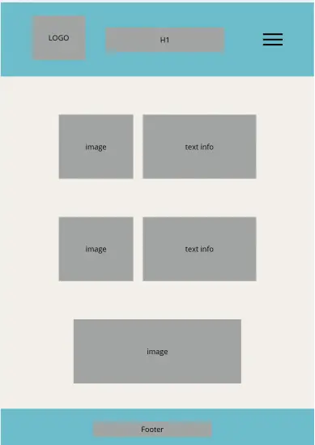
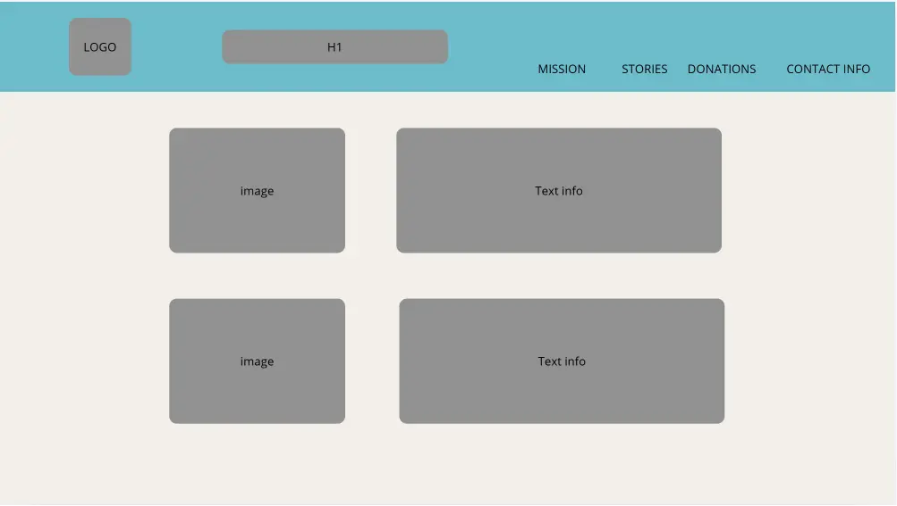

Site Name
The name Angeles del Cielo Oaxaca represents an animal rescue organization dedicated to rescuing, sterilize and finding loving homes for abandoned animals in Oaxaca.
Opcional domain: angelesdelcielooaxaca.org
Site purpose
The purpose of this website is to provide information about Angeles del Cielo, including its mission, rescued animals available for adoption, donation options, success stories and contact information.
Scenarios
- Wich animals are currently available for adoption?
- How can I donate to support the rercue?
Color Scheme
- Graphite #2A2B2A: Text
- Parchment #F2EFE9: Background Color
- Blue #6dbdcb: Heading, Footer
Typography
- Open sans: General Content
- Roboto: Headings
Wireframes
Mobile View

Desktop View
